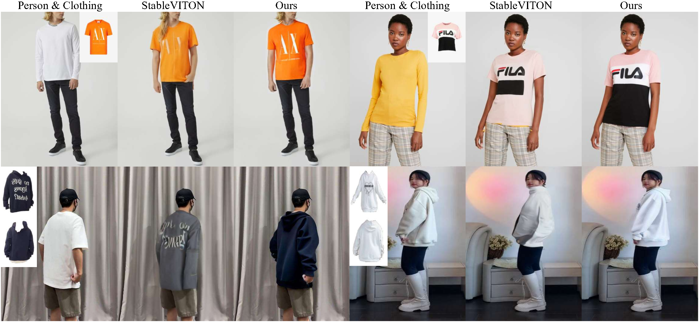

MV-VTON: Multi-View Virtual Try-On with Diffusion Models

The goal of image-based virtual try-on is to generate an image of the target person naturally wearing the given clothing. However, most existing methods solely focus on the frontal try-on using the frontal clothing. When the views of the clothing and person are significantly inconsistent, particularly when the person's view is non-frontal, the results are unsatisfactory. To address this challenge, we introduce Multi-View Virtual Try-ON (MV-VTON), which aims to reconstruct the dressing results of a person from multiple views using the given clothes. On the one hand, given that single-view clothes provide insufficient information for MV-VTON, we instead employ two images, i.e., the frontal and back views of the clothing, to encompass the complete view as much as possible. On the other hand, the diffusion models that have demonstrated superior abilities are adopted to perform our MV-VTON. In particular, we propose a view-adaptive selection method where hard-selection and soft-selection are applied to the global and local clothing feature extraction, respectively. This ensures that the clothing features are roughly fit to the person's view. Subsequently, we suggest a joint attention block to align and fuse clothing features with person features. Additionally, we collect a MV-VTON dataset, i.e., Multi-View Garment (MVG), in which each person has multiple photos with diverse views and poses. Experiments show that the proposed method not only achieves state-of-the-art results on MV-VTON task using our MVG dataset, but also has superiority on frontal-view virtual try-on task using VITON-HD and DressCode datasets. Codes and datasets will be publicly released at MV-VTON.
(a) MV-VTON encodes frontal and back view clothing into global features using the CLIP image encoder and extracts multi-scale local features through U-Net encoder's trainable copy. Both features act as conditional inputs for the decoder of U-Net. Besides, both features are selectively extracted through view-adaptive selection mechanism. Specifically, hard-selection is performed on the clothing images under the frontal and back view, while (b) soft-selection modulates the clothing features on frontal and back view, respectively, based on the similarity between the clothing's pose and the person's pose. Then the features from both views are concatenated in the channel dimension.
Global clothing features \( c_g \) provide identical conditions for blocks at each scale of U-Net, and multi-scale local clothing features \( c_l \) allow for reconstructing more accurate details. Therefore, joint attention blocks are proposed to align \( c_g \) and \( c_l \) with the current person features. Additionally, to retain most of the semantic information in global features \( c_g \), we use local features \( c_l \) to refine some lost and erroneous detailed texture information in \( c_g \) by selective fusion.
We show multiple groups of try-on results for the same person under different views, using the proposed method. The first column displays frontal-view and back-view garments, the second to fourth columns depict persons from different views, and the fifth to seventh columns showcase the corresponding try-on results.
We present more results at 1024×768 resolution on VITON-HD and DressCode datasets utilizing the model trained at 512×384 resolution.
@article{kim2023stableviton,
title={MV-VTON: Multi-View Virtual Try-On with Diffusion Models (Continuously updating ...)},
author={Kim, Jeongho and Gu, Gyojung and Park, Minho and Park, Sunghyun and Choo, Jaegul},
journal={arXiv preprint arXiv:2312.01725},
year={2023}
}
Project page template is borrowed from DreamBooth and StableVITON.